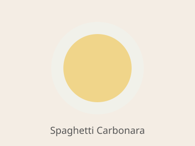

Home
Spaghetti Carbonara

Description
Spaghetti carbonara is a Roman classic made with just a handful of ingredients:
pasta, eggs, hard cheese, cured pork and plenty of black pepper.
The sauce comes together off the heat, when the eggs and cheese melt into a silky
coating with the starchy pasta water. It serves four and takes about 25 minutes.
Ingredients
- 1 lb (450 g) spaghetti
- 6 oz (170 g) guanciale or pancetta, diced
- 3 large eggs plus 2 egg yolks
- 1 cup finely grated Pecorino Romano
- 1 1/2 tsp freshly ground black pepper
- Salt, for the pasta water
Steps
- Bring a large pot of salted water to a boil and cook the spaghetti until al dente. Reserve 1 cup of the pasta water, then drain.
- While the pasta cooks, fry the guanciale in a large skillet over medium heat until crisp, about 8 minutes. Turn off the heat.
- Whisk the eggs, yolks, Pecorino and black pepper together in a bowl.
- Add the hot drained spaghetti to the skillet with the guanciale and toss to coat in the fat.
- Pour in the egg mixture and toss quickly, adding splashes of pasta water until the sauce is creamy.
- Serve immediately with extra Pecorino and black pepper.